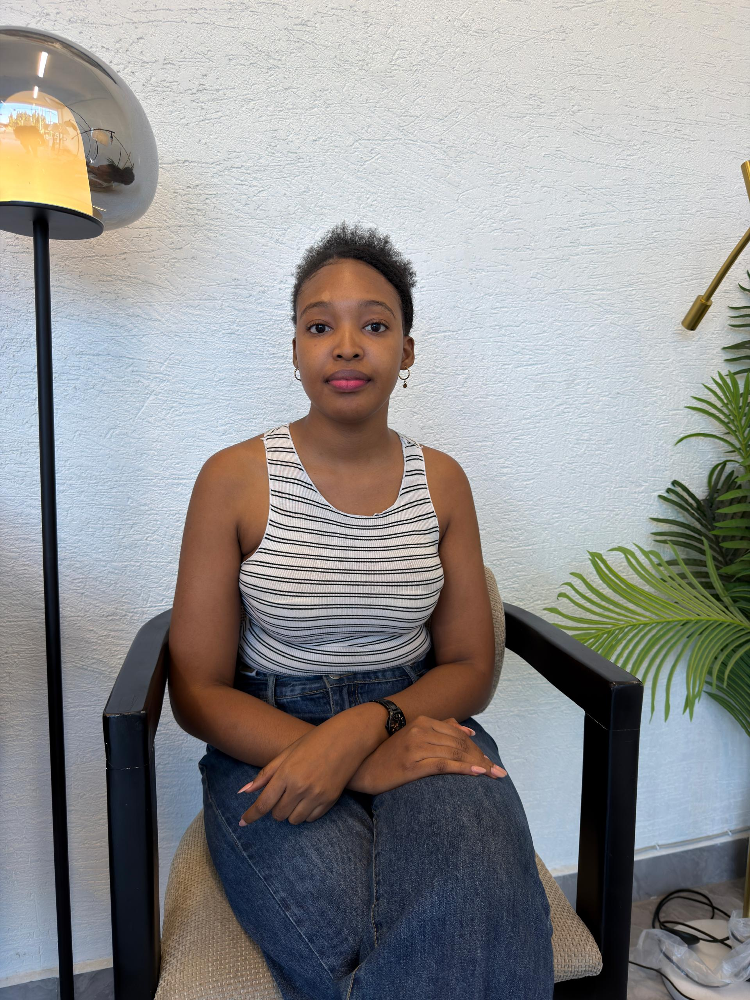
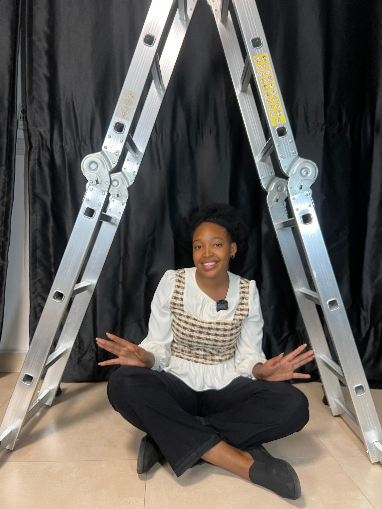
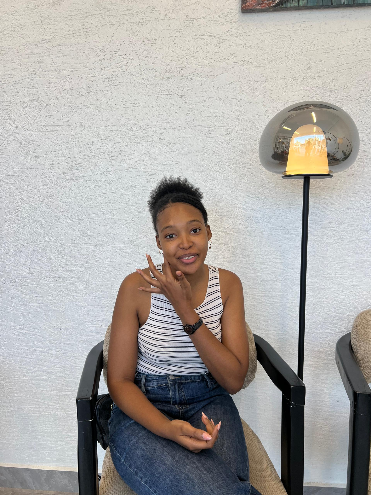
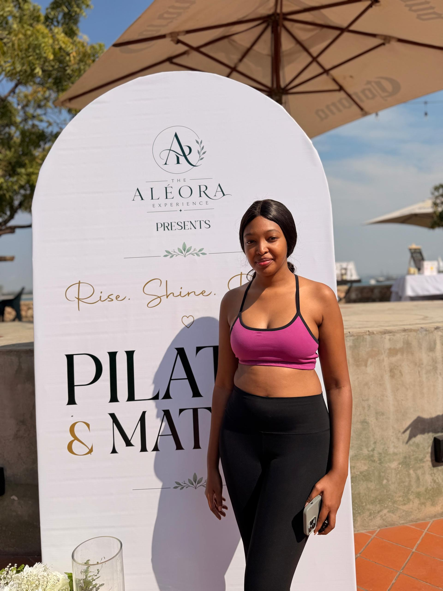
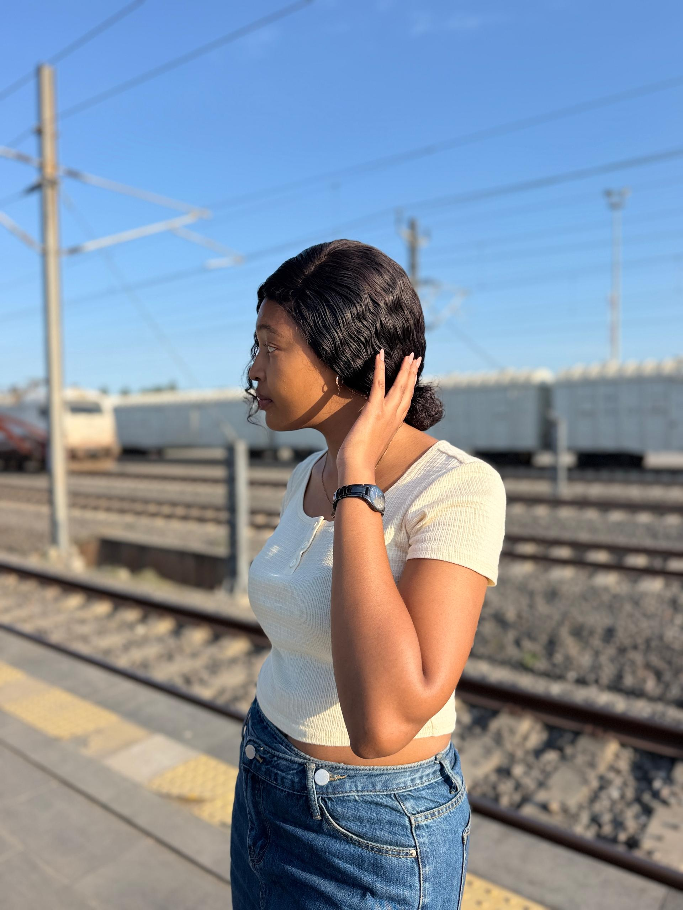
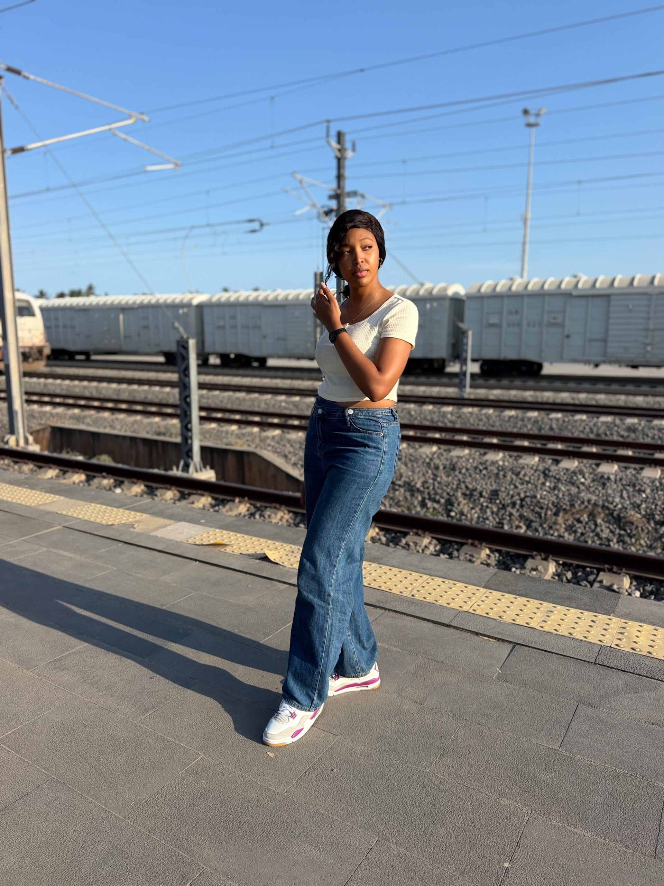
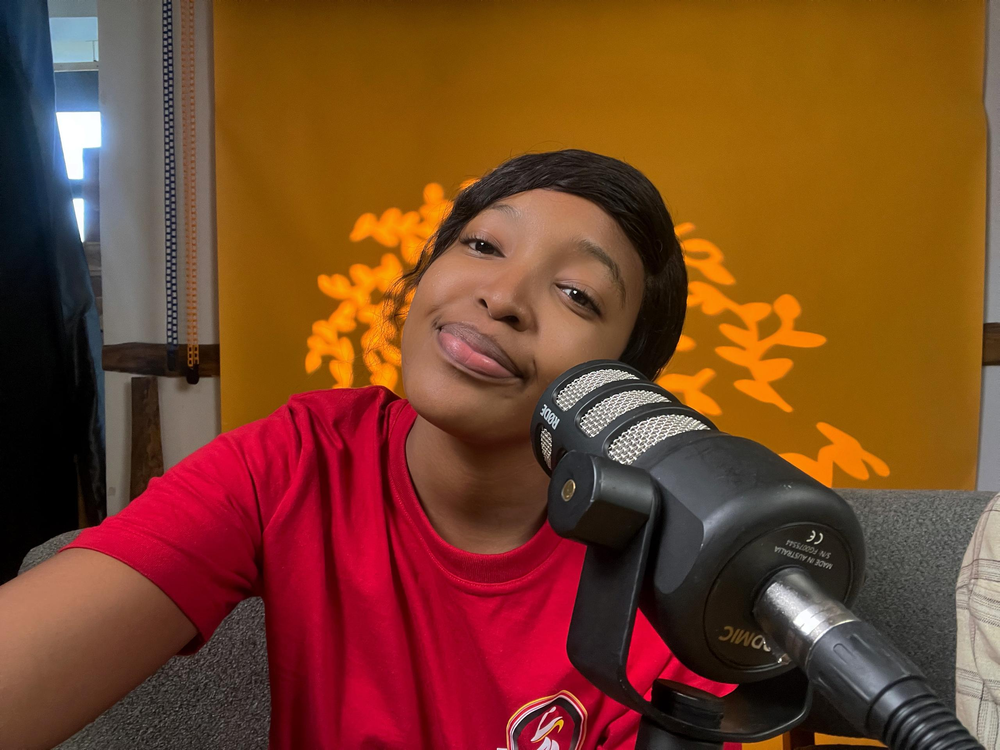

Creative mind
You turn ideas into stories, campaigns, content and experiences.
FOR BELINDA
A celebration of the woman I am so lucky to call my big sister.
Begin the story ↓LOOK HOW FAR YOU'VE COME
From marketing and media to creative work, entrepreneurship and building brands, you have never been afraid to learn, try, create and grow. I hope you know how proud I am of the woman you have become.
You turn ideas into stories, campaigns, content and experiences.
You have built real experience across digital strategy, branding and client work.
You created your own path through Scrub ASILI and kept believing in your ideas.
You keep choosing the next challenge, the next lesson and the next opportunity.
“I hope you always remember
how proud I am of you.”
MORE THAN A SISTER
You have always been caring. You have taken care of me, looked out for me and made me feel like I have someone I can count on.
That is why calling you just my sister never feels like enough. In so many ways, you have been like a second mother to me — and I will always be grateful for that.
Love always,
Sarah ♡
MEMORIES
The photographs may be small, but the memories behind them are not.







A MEMORY IN MOTION
WHAT I'LL MISS
Just knowing you're there.
The way you look after me.
The serious ones and the completely silly ones.
The everyday moments I might only appreciate properly once I miss them.
07 · YOUR NEXT CHAPTER
Go where the opportunity takes you. Grow, learn, explore and become even more of the woman you are meant to be.
A LETTER FROM SARAH
DEAR BELINDA,
I don't even know if I have the right words to explain how much you mean to me.
You are my big sister, but you have always been so much more than that. You have cared for me, taken care of me, guided me and made me feel like I always have someone I can count on.
That is something I will never take for granted.
As you begin this new chapter, I want you to know that even though things may change and we may not be as close physically, my love for you will never change.
I will always be proud to call you my big sister. I will always look at you and be proud of the woman you are, the woman you have become and the woman you are still becoming.
I know I'm going to miss you so much. I'll miss having you around. I'll miss your presence. I'll miss knowing that you're nearby. But underneath all of that sadness is something even bigger — I'm so happy for you.
You deserve this new chapter. You deserve new opportunities, new experiences and every good thing that comes with them.
So go, Belinda. Grow. Dream bigger. Become everything you're meant to become.
And whenever you feel far away, remember that you have a little sister here who loves you very much and is always going to be proud of you.
I love you, Belinda.
Forever proud to be your little sister. ❤️
Love,
Sarah
09 · ALWAYS
I love you, Belinda.
— Sarah ♡